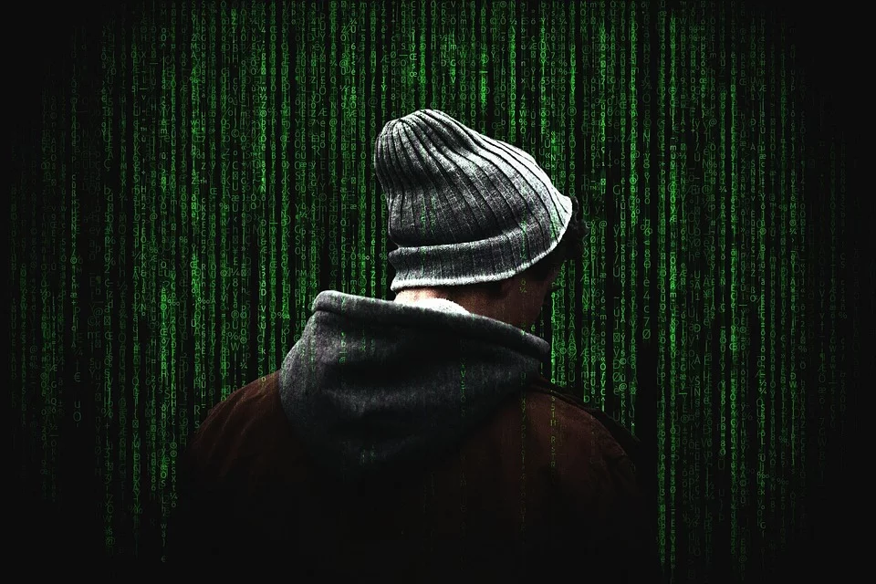

La CyberSécurité
La cybercriminalité est une menace qui ne dort jamais.
Vous pensez peut-être que le vol de vos données financières est la seule forme de cybercriminalité que vous devez craindre. Maisce n'est pas si simple. Il existe d'autres dangers que ceux qui pèsent sur vos finances. La cybercriminalité évolue en permanence et fait naître de nouvelles menaces.
Lorsque vous entendez parler des crimes en ligne, vous êtes peut-être tenté de ne plus utiliser Internet du tout. Cette réaction serait toutefois un peu radicale. À la place, pour protéger votre vie privée et vos données, vous pouvez commencer par apprendre à reconnaître les cybermenaces. Prendre des précautions simples et savoir qui contacter lorsque vous voyez des personnes se livrer à des activités criminelles en ligne sont également des habitudes importantes à adopter. Vous voulez peut-être apprendre à prévenir les cybermenaces, mais voilà : c'est impossible. Vous pouvez toutefois prendre des précautions pour vous en protéger.

la CyberCriminalité ?
Espionnage, vol de données sensibles chiffrées, fraude, sabotage, malveillance... Les motifs des cyberattaques et piratages sont de plus en plus nombreux et leurs cibles le sont tout autant. Les États visés depuis l'étranger comme les entreprises peuvent être attaqués de différentes manières, de la simple saturation du réseau informatique par déni de service (DDoS) aux logiciels espions évolués, en passant par le défacement d'un site piraté par des hackers.
La cybercriminalité englobe tous les crimes qui sont commis en ligne ou principalement en ligne. Les cybercriminels commettent souvent des crimes en ciblant des réseaux ou des appareils informatiques. La cybercriminalité regroupe plusieurs types d'actes malveillants allant de l'exploitation d'une faille de sécurité à l'usurpation de données personnelles
Mais la CyberSécurité c'est quoi alors ?
La cybersécurité est un domaine qui rassemble des lois, des politiques, des dispositifs, des concepts et des mécanismes de sécurité, appliqués au monde numérique et utilisés pour la protection des personnes et du matériel informatique des Etats et des organisations. La cybersécurité, domaine, toujours en pleine croissance, est très relié au processus de contrôle et de communication entre les personnes et les machines.
